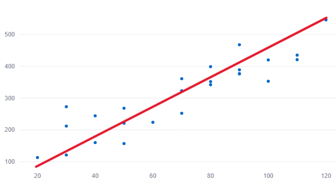

模型介紹
一、估計方法介紹
1、最小平方法(OLS；Ordinary Least Squares)：
(1)OLS 是一種最常見的參數估計方法，它假設資料的殘差具有恆定的方差。
(2)在OLS中，對於每個觀測值，所有的殘差都被視為具有相同的重要性，無論其對應的自變數值是什麼。
2、加權最小平方法(WLS；Weighted Least Squares)：
(1)WLS 考慮資料中的異方差性，通過對不同觀測值的殘差賦予不同的權重來進行參數估計；本研究以最小平方法配適之模型的殘差平方值作為權重進行加權。
(2)當資料的變異量隨著自變數的值而變化時，WLS 可以更好地適應資料，因為它對於方差較大的觀測值給予較小的權重，而對於方差較小的觀測值給予較大的權重。
[常見問題]如何決定要使用哪個方法進行統計推論?
當資料中存在異方差性時，使用 WLS 可以得到更準確的參數估計。然而，如果資料的異方差性不明顯或可以忽略，則使用 OLS 通常是一個合理的選擇，因為它是比較簡單且計算效率高的方法。
二、常見模型介紹
1、一階模型:
其中
- Y 為應變數(dependent variable)
- β0 為截距項
- β1, β2, ... , βn, ... 為自變數 X1, X2, ... ,Xn 的迴歸係數
- X1, X2, ... , Xn 為自變數(independent variables)
- ϵ 為標準誤差項(error term)
標準誤差項 ϵ 的四大假設:
- 誤差項 ϵ 的平均數為0，即 E(ϵ) = 0
- 誤差項 ϵ 的方差恆定，即 Var(ϵ) =σ2
- 誤差項 ϵ 呈現常態分佈
- 誤差項 ϵ 之間須相互獨立
假設若不滿足可能需對資料進行轉換確保統計推論的可信度，請參閱"問題解決"頁面。
2、二階模型:
其中
- Y 為應變數(dependent variable)
- β0 為截距項
- β1, β2, ... , β2n, ... 為自變數 X1, ... , Xn ,X12, ... , Xn2 的迴歸係數
- X1, ... , Xn ,X12, ... , Xn2 為自變數(independent variables)
- ϵ 為標準誤差項(error term)
標準誤差項 ϵ 的四大假設:
- 誤差項 ϵ 的平均數為0，即 E(ϵ) = 0
- 誤差項 ϵ 的方差恆定，即 Var(ϵ) =σ2
- 誤差項 ϵ 呈現常態分佈
- 誤差項 ϵ 之間須相互獨立
假設若不滿足可能需對資料進行轉換確保統計推論的可信度，請參閱"問題解決"頁面。
3、一階交互作用模型:
$$ Y = \beta_0 + \beta_1 X_1 + \ldots + \beta_n X_n + \beta_{n+1} X_1 X_2 + \beta_{n+2} X_1 X_3 + \ldots + \varepsilon $$
其中
- Y 為應變數(dependent variable)
- β0 為截距項
- β1, β2, ... , βn+2, ... 為自變數 X1, ... , Xn , X1X2 , X1X3, ... 的迴歸係數
- X1, ... , Xn 為自變數(independent variables)
- X12, ... , Xn2 為交互作用項(interaction terms)
- ϵ 為標準誤差項(error term)
標準誤差項 ϵ 的四大假設:
- 誤差項 ϵ 的平均數為0，即 E(ϵ) = 0
- 誤差項 ϵ 的方差恆定，即 Var(ϵ) =σ2
- 誤差項 ϵ 呈現常態分佈
- 誤差項 ϵ 之間須相互獨立
假設若不滿足可能需對資料進行轉換確保統計推論的可信度，請參閱"問題解決"頁面。
4、自訂模型:
可供使用者自主設計所需的變數和交互作用，但這些模型可能需要更多的參數來估計，並可能更難解釋。
三、如何選擇模型
1、一階模型:
- 特徵：散佈圖呈現線性趨勢，數據點大致分布在一條直線附近。
- 建議應用場景：當數據呈現簡單的線性關係，適合選用一階模型。 
2、二階模型:
- 特徵：散佈圖呈現曲線趨勢，可能是向下凹的形狀。
- 建議應用場景：當數據呈現如下圖的二次曲線關係，適合選用二階模型。

[常見問題]其他種類的二次函數不能使用二階模型嗎?
不可以；但可以參考其他種類的X適合的轉換方式去配適模型。
(1)若散佈圖呈現如下圖的曲線關係，可將變數X進行log function的轉換。

(2)若散佈圖呈現如下圖的曲線關係，可將變數X進行倒數的轉換。

3、一階交互作用模型:
- 特徵：散佈圖呈現在不同組別或條件下，不同變量之間的交叉影響關係。
- 建議應用場景：當數據中存在交互作用效應時，適合選用一階交互作用模型。
[例]有一組觀測國高中和大學生每週玩電子遊戲的時間(Y)的資料，變數有學生年級(X1)、每週使用電子產品時間(X2)，透過變數意涵可推測X1有可能會影響X2，因此將考慮把交互作用項放入模型中進行配適。
4、自訂模型:
- 特徵：適用任何形狀的散佈圖，使用者可根據數據特點和問題自行定義。
- 建議應用場景：當數據無法簡單歸納為一階或二階模型時，使用者可根據自身領域知識與經驗自訂模型。
[常見問題]配適模型應該要'非常'擬合資料嗎?
雖然會有一個誘導可以擬合一個高次多項式並得到較低的錯誤，但這可能會導致過擬合。你需要經常畫出關係圖來檢視擬合情況，並且專注於保證擬合合理，既沒有過擬合又沒有欠擬合。

明顯地應向兩端尋找曲線點，看看這些形狀和趨勢是否有意義；在本例中應選擇二次模型進行擬合，更高次的多項式最後可能產生怪異的推斷結果。
擬合模型的意圖是為了猜測母體參數，而非單單對於手上的資料進行一個完美的配適！